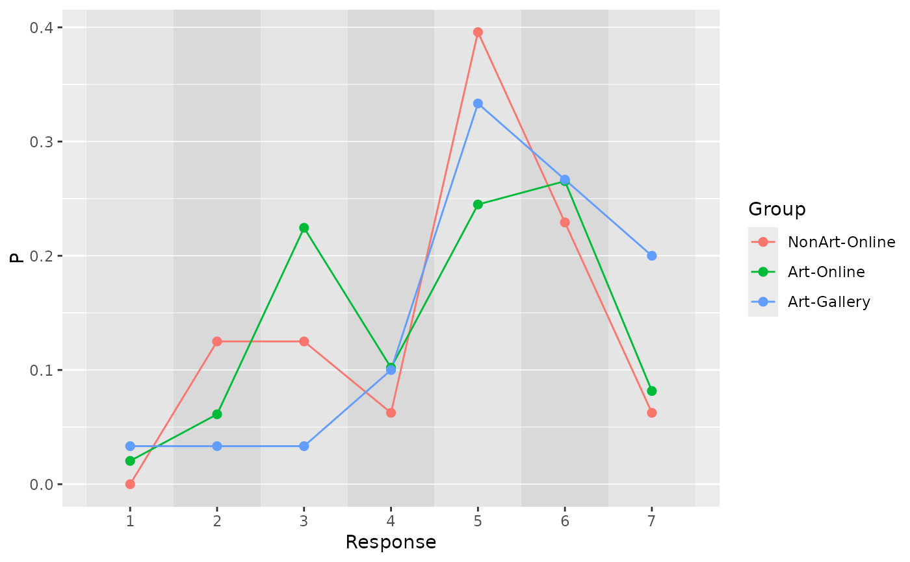
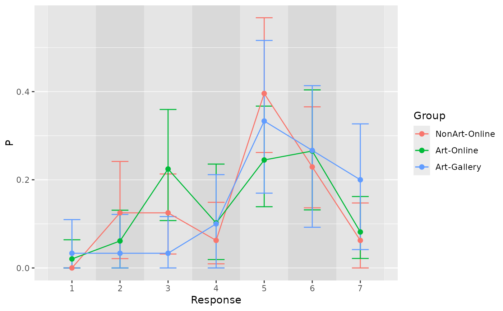
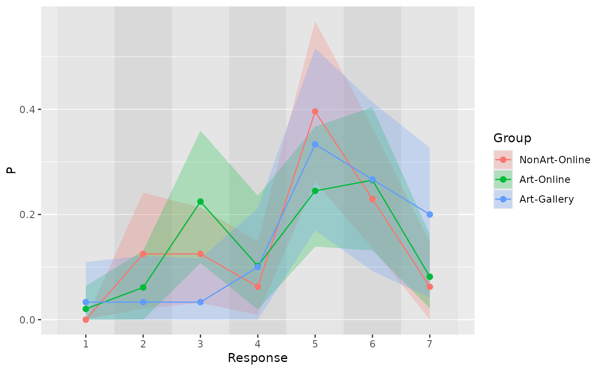
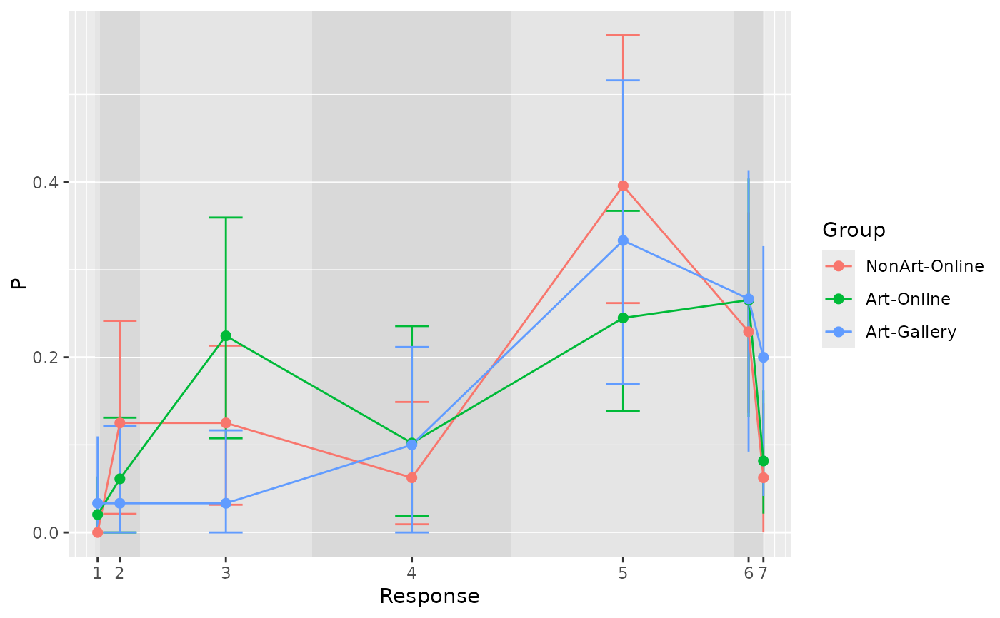

Plot proportion or count of responses
plot_responses.RdPlot proportion or count of responses
Usage
plot_responses(
df,
x,
y,
ymin = NULL,
ymax = NULL,
ribbon_ymin = NULL,
ribbon_ymax = NULL,
color = NULL,
group = NULL,
cutpoints = NULL,
fill_interval = c("gray90", "gray85")
)Arguments
- df
Table with data
- x
Name of the response level variable
- y
Name of variable with statistic, either proportion
Por countsN- ymin
Name of variable with lower limit for error bar, e.g.,
LowerCI. Optional.- ymax
Name of variable with lower limit for error bar, e.g.,
UpperCI. Optional.- ribbon_ymin
Name of variable with lower limit for ribbon, e.g.,
PosteriorLowerCI. Optional.- ribbon_ymax
Name of variable with upper limit for ribbon, e.g.,
PosteriorUpperCI. Optional.- color
Name of variable that maps color. Optional.
- group
Name of variable that maps grouping. Optional.
- cutpoints
Optional vector of estimated cut points. In case of the matrix, average as computed per column
- fill_interval
Fill colors for stripes that indicate intervals.
Examples
data(aiq)
aiq_avg <- bootstrap_response_counts(aiq, Response ~ Group + Question, R = 100)
#> ■■■■■ 13% | ETA: 11s
#> ■■■■■■■■■■■■■ 39% | ETA: 7s
#> ■■■■■■■■■■■■■■■■■■■■■ 65% | ETA: 4s
#> ■■■■■■■■■■■■■■■■■■■■■■■■■■■■ 90% | ETA: 1s
aiq_q1 <- dplyr::filter(aiq_avg, Question == Question[1])
plot_responses(aiq_q1, x = Response, y = P, color = Group)

#> x xend PANEL group alpha fill
#> 1 0.03703704 0.1693122 1 -1 1 gray90
#> 2 0.16931217 0.3015873 1 -1 1 gray85
#> 3 0.30158730 0.4338624 1 -1 1 gray90
#> 4 0.43386243 0.5661376 1 -1 1 gray85
#> 5 0.56613757 0.6984127 1 -1 1 gray90
#> 6 0.69841270 0.8306878 1 -1 1 gray85
#> 7 0.83068783 0.9629630 1 -1 1 gray90
# with errorbars
plot_responses(aiq_q1, x = Response, y = P, ymin = LowerCI, ymax = UpperCI, color = Group)

#> x xend PANEL group alpha fill
#> 1 0.03703704 0.1693122 1 -1 1 gray90
#> 2 0.16931217 0.3015873 1 -1 1 gray85
#> 3 0.30158730 0.4338624 1 -1 1 gray90
#> 4 0.43386243 0.5661376 1 -1 1 gray85
#> 5 0.56613757 0.6984127 1 -1 1 gray90
#> 6 0.69841270 0.8306878 1 -1 1 gray85
#> 7 0.83068783 0.9629630 1 -1 1 gray90
# with ribbon intead of error bars
plot_responses(aiq_q1, x = Response, y = P,
ribbon_ymin = LowerCI, ribbon_ymax = UpperCI, color = Group)

#> x xend PANEL group alpha fill
#> 1 0.03703704 0.1693122 1 -1 1 gray90
#> 2 0.16931217 0.3015873 1 -1 1 gray85
#> 3 0.30158730 0.4338624 1 -1 1 gray90
#> 4 0.43386243 0.5661376 1 -1 1 gray85
#> 5 0.56613757 0.6984127 1 -1 1 gray90
#> 6 0.69841270 0.8306878 1 -1 1 gray85
#> 7 0.83068783 0.9629630 1 -1 1 gray90
# with cutpoints from the model fit
data(aiq_draws)
cutpoints_draws <- extract_stan_posterior_matrix(aiq_draws, cutpoints)
plot_responses(aiq_q1, x = Response, y = P, ymin = LowerCI, ymax = UpperCI,
color = Group, cutpoints = inv_logit(colMeans(cutpoints_draws)))

#> x xend PANEL group alpha fill
#> 1 0.03703704 0.04360385 1 -1 1 gray90
#> 2 0.04360385 0.09866389 1 -1 1 gray85
#> 3 0.09866389 0.33707025 1 -1 1 gray90
#> 4 0.33707025 0.61361725 1 -1 1 gray85
#> 5 0.61361725 0.92193144 1 -1 1 gray90
#> 6 0.92193144 0.96101913 1 -1 1 gray85
#> 7 0.96101913 0.96296296 1 -1 1 gray90